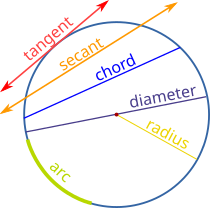

Circle Chords
What's a Chord?
A Chord is a line segment with both endpoints on the circle's circumference.

Other important lines are:
- A chord that passes through the center is a Diameter
- A line that just touches the circle at one point is a Tangent
- A line that cuts the circle at two points is a Secant
- And a part of the circumference is an Arc
Circle Chord Theorems
Bisect: A radius that's perpendicular (at right angles) to a chord bisects the chord (cuts it into two equal halves).

lengths "a" are equal
The Reverse: The perpendicular bisector of a chord always passes through the center.

the bisector goes through center
Why it Works
The secret is in the Right Triangle:

Using the Pythagorean Theorem:
a2 + b2 = r2
Where:
- a is the side from A to B (half the chord)
- b is the side from the center to the midpoint B of the chord
- r is the radius
Chord Distance vs. Length
Equidistant Chords: If two chords are the same distance from the center, they are equal in length

equal distance from center
equal length chords
The "Closer is Longer" Rule: As a chord gets closer to the center of the circle, it gets longer.

shorter distance from center
means longer length chord
The Limit: The longest possible chord is the diameter, which has a distance of zero from the center.

longest length chord is the diameter
These are the extremes:
- Distance = radius: The chord has zero length (it's a point/tangent)
- Distance = zero: The chord is at its maximum length (the diameter)
These ideas help us understand how the distance from the center controls the length of a chord.